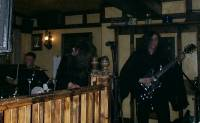

News
- REUNION
After much pressure from supporting friends, fans and an unmissable opportunity....SABBRA CADABRA ARE BACK! The line up is slightly altered but the core of guitarist Jon and bassist Rob remains. We're a little slow updating the website here but look out for information on the new members. We're already taking bookings and the first gig will be 10th February at the Portland Rock Bar, Hove as part of their classic albums events. We'll be (ironically) playing an edited version of the Black Sabbath album REUNION. Tickets are priced at £4 (available from ticket web at £5, click here) - New Bassist
Rob has moved on to pastures new (though for all you Rob-aholics out there, he'll probably be appearing with Sabbra Cadabra for the next gig or two!) and we all wish him the very best. However, his shoes (big though they may be) needed to be filled. The band would like to welcome new bassist 'Ben' to the fold and look forward to working with him. Look out for more information on Ben coming shortly to the 'Peoples' page - not to mention as many daft looking pictures as we can muster! - Weymouth Gig Cancelled
Due to a double booking error (not on our part!), the gig booked for the 28th April at Finn McCoul's, Weymouth has been cancelled. Many apologies for that but we'll try and arrange a new gig as soon as possible so keep an eye on the gig list! - New Demo CD
The new demo CD is now out. If you know of a venue near you that would be interested in a live Sabbath evening, please let us know so that we can send them one. - Web Site Makeover
We hope you enjoy the new web site layout with some specially commissioned artwork by graphic artist Steve Bruce. - Upcoming Gigs
For details of upcoming gigs, please click here.